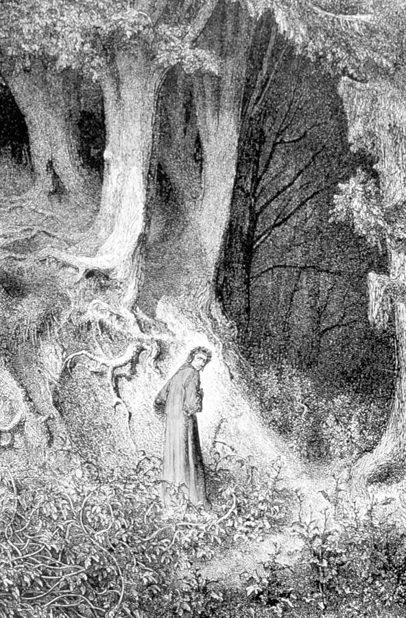

 |
Dante IA Canto 1 employs symbolism about a "dark wood' and "wandering from the path" and getting lost in the dark wood. There are numerous examples of similar or identical images within our canon of scripture. Search for and select one or two comparable scriptural images and report on them. Remember to devise a question for the report. |
Dante IB Canto 3, lines 22-69 describes "the futile" and their punishment. What is the nature of this offense and why is it a sin (versus a transgression). |
|
Dante IIA The Vestibule and the Second Circle contain souls that are driven by wind. In particular, the lustful are driven about by a "black wind." What is "lust" and why is a black wind appropriate as the punishment of the lustful? |
|
 |
Dante IIB Canto 6 describes the punishment of the gluttonous. What is gluttony? What types of gluttony are visible in our own society, culture or civilization today? Why is the image of Cerberus tearing apart the gluttonous an appropriate punishment? |
 |
Dante IIIA What images does Dante employ regarding suicides. Are they appropriate, and if so how? If not, why not, and can you suggest better ones? |
Dante IIIB Canto 11 explains the geography of Hell. Three main divisions represent three categories of wrong behavior. What are the three categories? Are these distinctions meaningful? Why are the circles at the top of Hell wider than those at the bottom? |
|
Dante IVA The 8th Circle (cantos 18 through 30) is made of 10 bowges (trenches). Pick any one (of these and explain why the sins punished in the bowges on either side are related to the one you pick. For example: if you pick hypocrisy, then explain why barrators are in the next bowge above hypocrites, and why thieves are on the next lower bowge. |
|
Dante IVB Explain how and why the bridges across the 6th bowge are broken. Why is Caiaphas there? |
|
Dante VA The final circle of Hell contains traitors to kindred, country, guests and Lords. What is the essential quality or characteristic of treachery? How is the essence and quality described by the images Dante uses to punish each class of traitors? Is Dante justified in placing traitors to guests lower than traitors to kindred? How was hospitality to guests treated diferently in Medieval Europe than it is today? |
|
Dante VB Why is the image of ice (the frozen lake) assigned to the worst of sinners (i.e., traitors)? Why not fire or some other image of torment? Using the nobility of elements (earth water, fire and air) explain how punishments also reflected a restriction of movement as one descends through Hell. What does this suggest? |